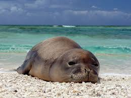
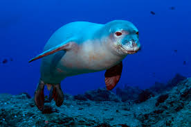
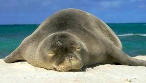
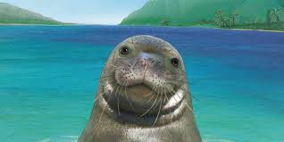

What Is A Mediterranean Monk Seal?
The Mediterranean Monk Seal is located in the Mediterranean Sea or areas with warm water. It is dark brown and gray. They grow to be about 7-9 feet and the males tend to weigh greater than females. With the right conditions, the seals can live up 25-30 years old.The seal is usually very calm and mellow. They usually eat fish, mollusks, and squid.
Why Is the Seal Endangered?
There are only about 450 Mediterranean Monk Seals left in the world. Many factors contribute to their rapidly decreasing population: pollution, human interactions, and hunting.The Mediterranean Monk Seals are very shy. Because of this, when tourists come to the seals habitats, they try to stay away from the humans causing them to move out of their environment. Hunting and pollution are also major factors. Pollution kills the seals food and hunting kills the seals. In order to save the seals, situ conservation has established marine protected areas, the rehabilitation of orphaned seals, and provided no-hunting zones.
   